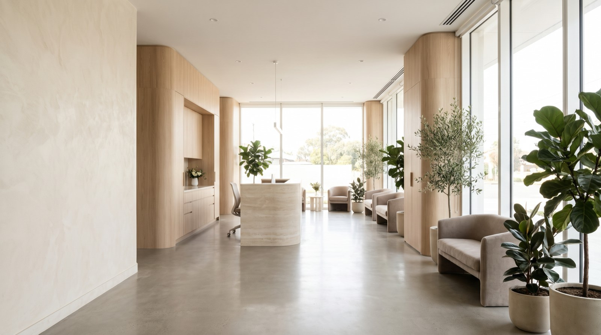
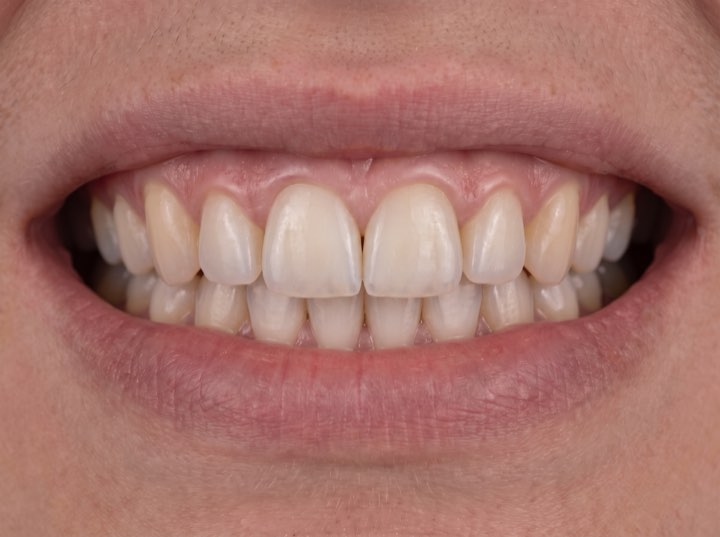
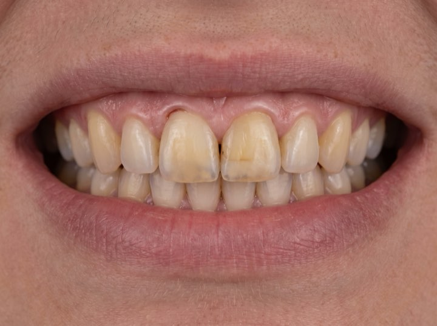

Veneers · Implants · Full-mouth restoration
Most of our new patients haven't been in years and are braced for a lecture. There isn't one. Veneers, implants and full-mouth restoration, at whatever pace you can stand.

Services
Every case starts with the same thing: a scan, a preview, and a written plan with a number on it.
Hand-layered by a master ceramist. You approve a digital preview and a trial smile before a single tooth is prepared.
Single tooth to full arch. Guided placement from a 3D scan, which is why they seat precisely and last.
For wear, bite collapse or years of patchwork dentistry. Planned as one outcome rather than a series of repairs.
The lower-commitment start. Often all somebody actually needs, and we'll say so if that's the case.
Results
"The digital preview was the thing. I knew exactly what I was buying."
Marcus D. · Veneers"Financing meant I could actually do it this year instead of someday."
Julia P. · Full-mouth"Sedation option made a fifteen-year phobia manageable."
Rob T. · Implants"Evening slots meant I never took a day off work."
Nadia H. · Whitening & bondingProcess
No surprises and no moving numbers. You see the outcome and the price before anything is prepared.
3D scan, photographs, and a conversation about what actually bothers you. About an hour.
You see your own result rendered before treatment starts, and we adjust it until you're happy.
A fixed plan with a fixed number, plus monthly options. You take it away and think about it.
Most veneer cases are two visits. We review at six months and you have a direct line throughout.
One of ours
Old repairs darken and staining builds up, and both are routine to put right. Drag the handle to see the same mouth after treatment.


Most of our patients had, some for a decade. The consult is free, nothing is done on the day, and you leave knowing what it would take and what it would cost.
Free consultations with nothing done on the day unless you ask. Sedation available, financing from 0% APR, and you can stop at any point.